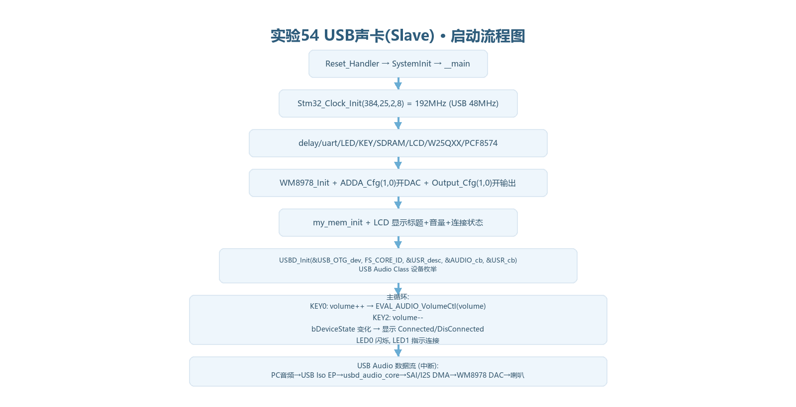
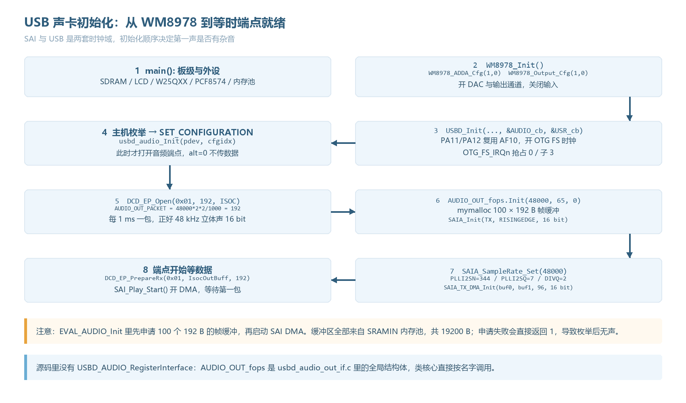
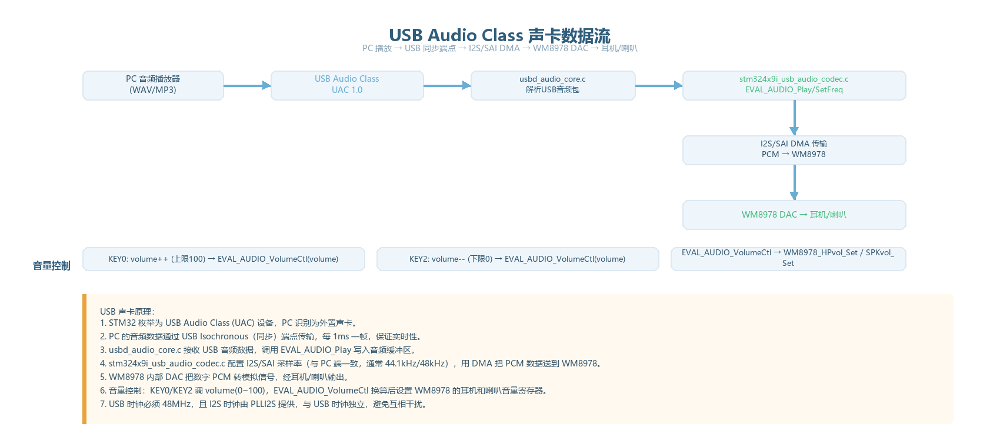
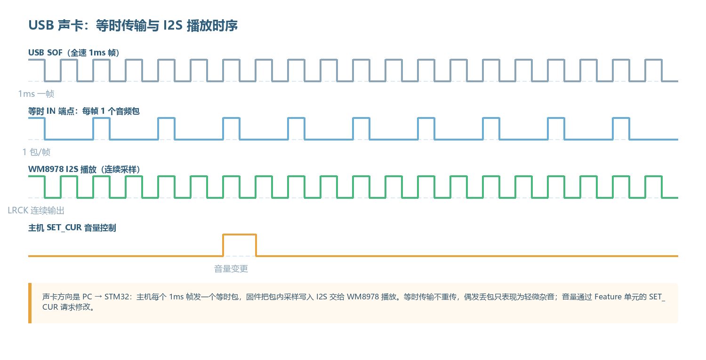
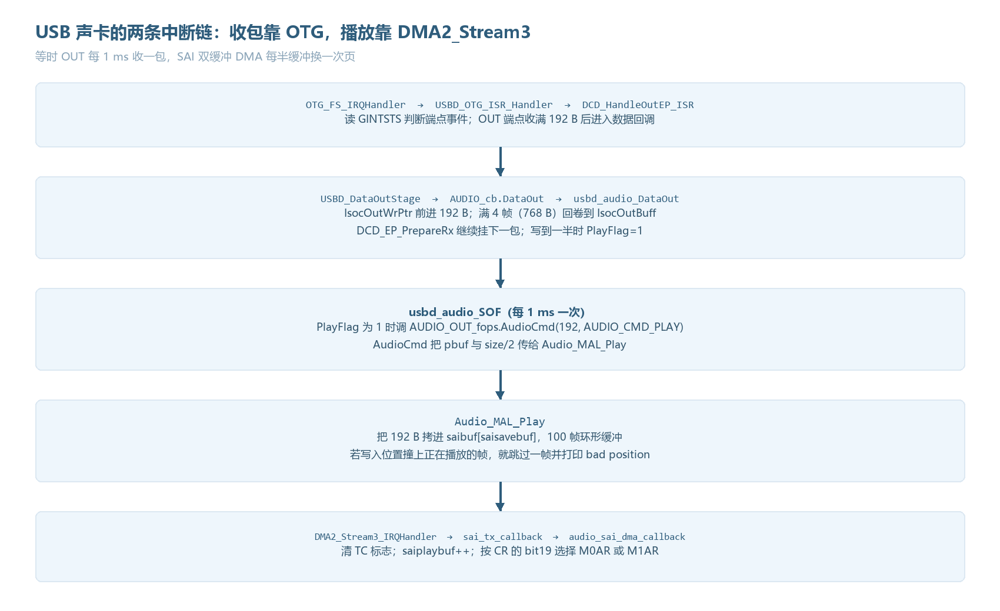

01 实验目标与系统角色
实验54 把 STM32F429 配置成 USB Audio Class 1.0 的扬声器设备。插上 USB 线后，Windows 或 Linux 的音频设备列表里会出现 ALIENTEK STM32F4/F7 USB AUDIO；把系统输出切到它，电脑播放的 PCM 数据就以每 1 ms 一包、每包 192 字节的等时（Isochronous）传输送到板子。
板子这一侧不是“收到数据就丢给 Codec”这么简单：USB 主机送数据的速度与 SAI 实际播放的速度存在微小偏差（48 kHz 标称下 SAI 实际约 47.991 kHz），所以源码用了一个 100 帧的环形缓冲来吸收累积误差。真正让声音连续的是 Audio_MAL_Play 的写指针与 audio_sai_dma_callback 的读指针。
| 项目 | 参数 | 来源 |
|---|---|---|
| 设备类 | Audio Class 1.0，扬声器 | 配置描述符 109 字节 |
| 采样率 | 48 000 Hz，单频 | USBD_AUDIO_FREQ |
| 格式 | PCM，16 bit，2 声道 | AUDIO_FORMAT_TYPE_III |
| 端点 | 0x01 ISO OUT，192 B/包，bInterval=1 | AUDIO_OUT_EP |
| 默认音量 | 65%（0~100） | DEFAULT_VOLUME |
| 主控时钟 | 192 MHz，USB 48 MHz | Stm32_Clock_Init(384,25,2,8) |
| 音频接口 | SAI1 Block A，主发送，DMA2_Stream3 | sai.c |
| Codec | WM8978，I2C 控制 | wm8978.c |
int main(void)
{
u8 key;
u8 t=0;
u8 Divece_STA=0XFF;
Stm32_Clock_Init(384,25,2,8); // 192 MHz，PLLQ=8 → 48 MHz
delay_init(192); // fac_us=192，SysTick 时钟源 HCLK
uart_init(115200);
LED_Init();
KEY_Init();
SDRAM_Init();
LCD_Init();
W25QXX_Init();
PCF8574_Init();
WM8978_Init(); // I2C 配置 Codec
WM8978_ADDA_Cfg(1,0); // 开 DAC，关 ADC
WM8978_Input_Cfg(0,0,0); // 关输入通道
WM8978_Output_Cfg(1,0); // 开输出
my_mem_init(SRAMIN);
my_mem_init(SRAMEX);
my_mem_init(SRAMCCM);
USBD_Init(&USB_OTG_dev,USB_OTG_FS_CORE_ID,&USR_desc,&AUDIO_cb,&USR_cb);
while(1) { /* 按键调音量 + 状态显示 */ }
}
main.c 没有调用 HAL_Init()：Stm32_Clock_Init 直接操作 RCC，delay_init 自己设置 SysTick 时钟源。这一点与实验53 不同，读代码时不要想当然。02 目录与文件分工
| 文件 | 层次 | 关键符号 |
|---|---|---|
USER/main.c | 应用 | KEY_Scan、volume、bDeviceState |
USB/USB_APP/usbd_desc.c | 设备描述符 | VID 0x0483、PID 0x5730、产品字符串 |
USB/USB_APP/usbd_conf.h | 编译期配置 | USBD_AUDIO_FREQ 48000、AUDIO_OUT_EP 0x01 |
USB/USB_APP/usb_bsp.c | 板级 | USB_OTG_BSP_Init、EnableInterrupt |
USB/USB_APP/usbd_usr.c | 用户回调 | OTG_FS_IRQHandler、USR_cb |
Class/audio/usbd_audio_core.c | 类核心 | 配置描述符、usbd_audio_Setup、DataOut、SOF |
Class/audio/usbd_audio_out_if.c | 板级音频接口 | AUDIO_OUT_fops、AudioCmd |
USB/USB_APP/stm324x9i_usb_audio_codec.c | Codec 适配 | EVAL_AUDIO_Init、Audio_MAL_Play、audio_sai_dma_callback |
HARDWARE/SAI/sai.c | SAI 驱动 | SAIA_Init、SAIA_SampleRate_Set、SAIA_TX_DMA_Init |
HARDWARE/WM8978/wm8978.c | Codec 寄存器 | WM8978_Init、WM8978_HPvol_Set |
CORE/startup_stm32f429xx.s | 启动 | OTG_FS_IRQHandler、DMA2_Stream3_IRQHandler 向量 |
阅读顺序建议：先看 usbd_audio_core.c 里的 109 字节配置描述符，搞清楚主机看到的是什么设备；再看 usbd_audio_Init 与 usbd_audio_DataOut，理解端点与缓冲；最后看 stm324x9i_usb_audio_codec.c，把 USB 数据流与 SAI 播放连起来。
工程里还带着 MSC、HID、CDC 的源码，但都没有参与编译。判断依据同样是 Keil 工程的文件列表，而不是磁盘上有哪些文件。
03 启动流程总览

启动顺序的关键点是“音频硬件先于 USB”。WM8978_Init 通过 I2C 配置 Codec 的时钟、DAC 与输出；USBD_Init 之后主机才可能发 SET_CONFIGURATION，而直到 usbd_audio_Init 被调用时，SAI 与 DMA 才会真正启动。这样第一包音频到达时，DAC 已经在工作，不会出现开头的“咔哒”声。
Stm32_Clock_Init(384,25,2,8); // 192 MHz / USB 48 MHz delay_init(192); // fac_us=192；未开 SysTick 中断 uart_init(115200); WM8978_Init(); // I2C 写 Codec 寄存器 WM8978_ADDA_Cfg(1,0); // DAC 开，ADC 关 WM8978_Input_Cfg(0,0,0); // 输入通道全关 WM8978_Output_Cfg(1,0); // 耳机/喇叭输出开 USBD_Init(&USB_OTG_dev,USB_OTG_FS_CORE_ID,&USR_desc,&AUDIO_cb,&USR_cb); while(1) { key=KEY_Scan(1); // 支持连按 if(key) { /* 调音量 */ } delay_ms(20); }
- 为什么没有 HAL_Init：这份 main 直接调用
Stm32_Clock_Init和delay_init。少了 HAL_Init 就不会配置 NVIC 优先级分组，但 USB BSP 的HAL_NVIC_SetPriority仍能工作，因为分组默认值可用。 - WM8978 必须在 USB 之前：主机一旦把接口切到 alt=1，音频包就会连续到来；Codec 没配好就会丢前几包甚至全程无声。
- delay_init 只设时钟源：
SYSTEM_SUPPORT_OS为 0 时它不打开 SysTick 中断，delay_us靠读SysTick->VAL轮询，所以HAL_Delay在本工程不可用。 - USBD_Init 内部就开中断：与实验53 相同，这一版设备库在
USBD_Init末尾调用USB_OTG_BSP_EnableInterrupt，没有单独的USBD_Start。 - 主循环只做三件事：扫描按键、改音量、刷新连接状态；音频播放完全由 USB 中断与 DMA 中断驱动。
04 启动文件与向量表
启动文件仍是 CORE/startup_stm32f429xx.s。本实验用到两个中断：OTG_FS_IRQHandler（中断号 67）负责 USB 枚举、控制传输与等时收包；DMA2_Stream3_IRQHandler（中断号 59）负责 SAI 发送缓冲换页。两者都在向量表里有固定槽位，函数名必须与启动文件一致。
Stack_Size EQU 0x00000400 // 主栈 1 KB AREA STACK, NOINIT, READWRITE, ALIGN=3 __initial_sp AREA RESET, DATA, READONLY EXPORT __Vectors __Vectors DCD __initial_sp // 0x08000000：初始 MSP DCD Reset_Handler // 0x08000004：复位入口 // … DCD DMA2_Stream3_IRQHandler // 中断号 59 // … DCD OTG_FS_IRQHandler // 中断号 67 AREA |.text|, CODE, READONLY Reset_Handler PROC LDR R0, =SystemInit BLX R0 LDR R0, =__main BX R0 ENDP
向量表没有偏移：SystemInit 里 VECT_TAB_OFFSET 为 0，SCB->VTOR = FLASH_BASE。本实验不涉及 Bootloader 跳转，所以不需要像实验52 那样在 APP 里重设 VTOR。
- 两个中断缺一不可：只有 OTG 中断时能枚举但没声音；只有 DMA 中断时连设备都认不出来。
- DMA2_Stream3 不是随便选的：SAI1_A 的 TX 请求在 F429 上固定映射到 DMA2 Stream3 的通道 0，换流会传不出数据。
- 中断函数不能在多处定义：
OTG_FS_IRQHandler在usbd_usr.c，DMA2_Stream3_IRQHandler在sai.c，stm32f4xx_it.c里不能再写同名函数。 - 栈 1 KB 足够：音频数据都在静态数组与内存池里，中断里没有大局部变量；真正占内存的是 100 × 192 B 的
saibuf。
05 SystemInit 与 HAL_Init
Reset_Handler 先调 SystemInit，再进 __main，最后到 main。SystemInit 打开 FPU、把 RCC 恢复到复位默认值、设置向量表，不配置 PLL；因此从它返回时系统还跑在 HSI 16 MHz。
void SystemInit(void)
{
#if (__FPU_PRESENT == 1) && (__FPU_USED == 1)
SCB->CPACR |= ((3UL << 10*2)|(3UL << 11*2)); // CP10/CP11 全访问
#endif
RCC->CR |= (uint32_t)0x00000001; // 打开 HSION
RCC->CFGR = 0x00000000; // 清时钟配置
RCC->CR &= (uint32_t)0xFEF6FFFF; // 关 HSEON/CSSON/PLLON
RCC->PLLCFGR = 0x24003010;
RCC->CIR = 0x00000000;
SCB->VTOR = FLASH_BASE | VECT_TAB_OFFSET; // 0x08000000
}
本实验的 main 没有调用 HAL_Init，因此 Flash 预取与 Cache 的配置、NVIC 优先级分组都保持复位值。实际能跑起来，是因为 Stm32_Clock_Init 自己会打开预取并设置等待周期，而 HAL_NVIC_SetPriority 在默认分组下仍可写入优先级寄存器。
- 没有 HAL_Init 的副作用：
HAL_GetTick不会递增（SysTick 中断未开），所以任何依赖HAL_Delay或超时的 HAL 函数都可能卡死；本工程只用自定义delay_*。 - Cache 状态不确定：没有
HAL_Init就不会主动开 I/D Cache。USB 与 SAI 都用外设 FIFO/DMA，功能不受影响，但 CPU 取指性能不是最优。 - 优先级分组为默认值 0：此时 4 位全为抢占优先级，
HAL_NVIC_SetPriority(OTG_FS_IRQn,0,3)的子优先级参数被忽略，实际抢占优先级仍是 0。 - OverDrive 仍要开：192 MHz 必须开 OverDrive，
Stm32_Clock_Init内部已经处理，与 HAL_Init 无关。 - 与实验53 的差异：读卡器工程调用了
HAL_Init，本工程没有；这是两个 main 的实质区别，不是笔误。
06 192 MHz 与 48 kHz 音频时钟
系统时钟仍由 Stm32_Clock_Init(384,25,2,8) 产生：HSE 25 MHz / PLLM 25 = 1 MHz，× PLLN 384 = 384 MHz VCO，/ PLLP 2 = 192 MHz，/ PLLQ 8 = 48 MHz 给 USB。音频采样率则来自 PLLI2S，与主 PLL 相互独立。
| 时钟 | 计算 | 结果 | 用途 |
|---|---|---|---|
| SYSCLK | 25/25 × 384 / 2 | 192 MHz | 内核、AHB |
| USB | 384 / 8 | 48 MHz | OTG FS |
| PLLI2S VCO | 1 MHz × 344 | 344 MHz | SAI 时钟源 |
| PLLI2SQ | 344 / 7 | 49.142857 MHz | SAI_CK |
| MCKDIV | 49.142857 / (512 × 2) | 47.991 kHz | 实际采样率 |
| 标称 | USBD_AUDIO_FREQ | 48 kHz | USB 包长基准 |
const u16 SAI_PSC_TBL[][5]=
{
{4800,344,7,0,2}, // 48 kHz：PLLI2SN=344, Q=7, DIVQ=0, MCKDIV=2
{4410,429,2,18,0}, // 44.1 kHz
{9600,344,7,0,1}, // 96 kHz
// …
};
u8 SAIA_SampleRate_Set(u32 samplerate)
{
for(i=0;i<(sizeof(SAI_PSC_TBL)/10);i++)
if((samplerate/10)==SAI_PSC_TBL[i][0])break;
if(i==(sizeof(SAI_PSC_TBL)/10))return 1; // 不支持的采样率
RCCSAI1_Sture.PLLI2S.PLLI2SN=SAI_PSC_TBL[i][1];
RCCSAI1_Sture.PLLI2S.PLLI2SQ=SAI_PSC_TBL[i][2];
RCCSAI1_Sture.PLLI2SDivQ=SAI_PSC_TBL[i][3]+1; // HAL 会减 1
HAL_RCCEx_PeriphCLKConfig(&RCCSAI1_Sture);
__HAL_SAI_DISABLE(&SAI1A_Handler);
SAI1A_Handler.Init.AudioFrequency=samplerate;
HAL_SAI_Init(&SAI1A_Handler);
SAIA_DMA_Enable();
__HAL_SAI_ENABLE(&SAI1A_Handler);
return 0;
}
- USB 48 MHz 与音频 47.991 kHz 不是同一个数：USB 用 PLLQ，音频用 PLLI2S。两者独立配置，互不推导。
- 为什么 SAI 实际慢一点：344/7 无法整除，49.142857 MHz 再除 1024 得 47.991 kHz，比标称 48 kHz 低约 0.019%。
- 误差靠缓冲吸收：电脑按 48 kHz 送、板子按 47.991 kHz 播，写指针会慢慢追上读指针；100 帧（约 2 ms）缓冲就是为此准备的。
- PLLI2SDivQ 加 1 的原因：HAL 库写寄存器时会自动减 1，表里存的是“寄存器值 + 1”，直接看表容易误以为分频比是 0。
- 不支持任意采样率：表里只有 8k、11.025k、16k、22.05k、32k、44.1k、48k、88.2k、96k、176.4k、192k；传其它值返回 1，但本工程固定 48k，不会触发。
07 USB 音频描述符与初始化

Audio Class 1.0 的配置描述符比 MSC 复杂得多：它包含 2 个接口。接口 0 是 AudioControl（AC），没有端点，只有输入终端、Feature Unit、输出终端等类特定描述符；接口 1 是 AudioStreaming（AS），有 alt 0 与 alt 1 两个设置，只有 alt 1 才带 1 个等时 OUT 端点。
| 描述符 | 长度 | 关键内容 |
|---|---|---|
| 配置描述符 | 9 B | 总长 109、2 个接口、自供电 100 mA |
| AC 标准接口 | 9 B | 接口 0、alt 0、0 端点、类 0x01 |
| AC 类特定头 | 9 B | bcdADC 1.00、wTotalLength 39、1 个流接口 |
| 输入终端 | 12 B | ID 1、类型 0x0101（USB Streaming） |
| Feature Unit | 9 B | ID 2、源 ID 1、只支持 Mute |
| 输出终端 | 9 B | ID 3、类型 0x0301（Speaker） |
| AS 接口 alt 0 | 9 B | 0 端点，零带宽 |
| AS 接口 alt 1 | 9 B | 1 端点，开始传输 |
| AS 通用 / 格式 | 7 + 11 B | PCM、2 声道、16 bit、48 kHz |
| 端点 + CS 端点 | 9 + 7 B | 0x01 ISO、192 B、bInterval 1 |
static uint8_t usbd_audio_CfgDesc[AUDIO_CONFIG_DESC_SIZE] =
{
0x09, USB_CONFIGURATION_DESCRIPTOR_TYPE,
LOBYTE(AUDIO_CONFIG_DESC_SIZE), HIBYTE(AUDIO_CONFIG_DESC_SIZE), // 109
0x02, 0x01, 0x00, 0xC0, 0x32, // 2 接口，自供电 100 mA
// 接口 0：AudioControl，0 端点
0x09, USB_INTERFACE_DESCRIPTOR_TYPE, 0x00, 0x00, 0x00,
USB_DEVICE_CLASS_AUDIO, AUDIO_SUBCLASS_AUDIOCONTROL, 0x00, 0x00,
// AC 类特定头：后面还有 39 字节
0x09, AUDIO_INTERFACE_DESCRIPTOR_TYPE, AUDIO_CONTROL_HEADER,
0x00, 0x01, 0x27, 0x00, 0x01, 0x01,
// 输入终端 → Feature Unit → 输出终端
0x0C, 0x24, 0x02, 0x01, 0x01, 0x01, 0x00, 0x01, 0x00, 0x00, 0x00, 0x00,
0x09, 0x24, 0x06, 0x02, 0x01, 0x01, 0x01, 0x00, 0x00,
0x09, 0x24, 0x03, 0x03, 0x01, 0x03, 0x00, 0x02, 0x00,
// 接口 1：AudioStreaming，alt 0 零带宽
0x09, 0x04, 0x01, 0x00, 0x00, 0x01, 0x02, 0x00, 0x00,
// alt 1：1 个端点，开始传输
0x09, 0x04, 0x01, 0x01, 0x01, 0x01, 0x02, 0x00, 0x00,
0x07, 0x24, 0x01, 0x01, 0x01, 0x01, 0x00,
0x0B, 0x24, 0x02, 0x03, 0x02, 0x02, 16, 0x01,
SAMPLE_FREQ(USBD_AUDIO_FREQ),
0x09, 0x05, AUDIO_OUT_EP, 0x01,
LOBYTE(AUDIO_OUT_PACKET), HIBYTE(AUDIO_OUT_PACKET), 0x01, 0x00, 0x00,
0x07, 0x25, 0x01, 0x00, 0x00, 0x00, 0x00
};
static uint8_t usbd_audio_Init(void *pdev, uint8_t cfgidx)
{
DCD_EP_Open(pdev, AUDIO_OUT_EP, AUDIO_OUT_PACKET, USB_OTG_EP_ISOC);
if (AUDIO_OUT_fops.Init(USBD_AUDIO_FREQ, DEFAULT_VOLUME, 0) != USBD_OK)
return USBD_FAIL; // 内存申请或 SAI 初始化失败
DCD_EP_PrepareRx(pdev, AUDIO_OUT_EP, (uint8_t*)IsocOutBuff, AUDIO_OUT_PACKET);
return USBD_OK;
}
- alt 0 与 alt 1 的区别：主机在空闲时停在 alt 0（零带宽），开始播放时发
SET_INTERFACE(1, alt=1)，此时端点才真正占用 192 B/ms 的带宽。 - AC 头里的 39：
wTotalLength=0x27只统计 AC 类特定描述符（头 9 + 输入终端 12 + Feature 9 + 输出终端 9 = 39），不是整个配置。 - Feature Unit 只有 Mute：
bmaControls(0)=0x01表示主通道支持静音控制；没有 Volume 控制位，所以主机侧音量滑块不会直接改 Codec 音量。 - 192 字节的来历：48 000 样本/秒 × 2 声道 × 2 字节 ÷ 1000 帧/秒 = 192 B/帧；
AUDIO_PACKET_SZE宏就是按这个式子算的。 - 端点属性 0x01：bit1~0 为 01 表示等时传输；没有握手包，也没有重传，丢一包就是一小段静音。
- PID 0x5730：与实验53 读卡器的 0x5720 不同，主机据此加载音频驱动而不是 USB 存储驱动。
08 枚举与等时传输时序


全速 USB 每 1 ms 有一个 SOF（Start of Frame）。主机在每一帧里安排一次等时 OUT 事务，把 192 字节 PCM 写进端点 0x01。设备端由 usbd_audio_DataOut 把数据放进 4 帧的 IsocOutBuff，再由 usbd_audio_SOF 每次取一帧交给 SAI 播放。
uint8_t IsocOutBuff[TOTAL_OUT_BUF_SIZE * 2]; // 4 × 192 × 2 = 1536 B uint8_t *IsocOutWrPtr = IsocOutBuff; uint8_t *IsocOutRdPtr = IsocOutBuff; static uint32_t PlayFlag = 0; static uint8_t usbd_audio_DataOut(void *pdev, uint8_t epnum) { DataOutCounter++; if (epnum == AUDIO_OUT_EP) { if (IsocOutWrPtr >= (IsocOutBuff + (AUDIO_OUT_PACKET * OUT_PACKET_NUM))) IsocOutWrPtr = IsocOutBuff; // 4 帧满，回卷 else IsocOutWrPtr += AUDIO_OUT_PACKET; // 前进 192 B ((USB_OTG_CORE_HANDLE*)pdev)->dev.out_ep[epnum].even_odd_frame ^= 1; DCD_EP_PrepareRx(pdev, AUDIO_OUT_EP, (uint8_t*)IsocOutWrPtr, AUDIO_OUT_PACKET); if ((PlayFlag == 0) && (IsocOutWrPtr >= (IsocOutBuff + ((AUDIO_OUT_PACKET * OUT_PACKET_NUM) / 2)))) PlayFlag = 1; // 写到一半才开始播 } return USBD_OK; }
static uint8_t usbd_audio_SOF(void *pdev)
{
if (PlayFlag)
{
AUDIO_OUT_fops.AudioCmd((uint8_t*)IsocOutRdPtr, AUDIO_OUT_PACKET, AUDIO_CMD_PLAY);
if (IsocOutRdPtr >= (IsocOutBuff + (AUDIO_OUT_PACKET * OUT_PACKET_NUM)))
IsocOutRdPtr = IsocOutBuff;
else
IsocOutRdPtr += AUDIO_OUT_PACKET;
if (IsocOutRdPtr == IsocOutWrPtr) // 写指针追上读指针
{
AUDIO_OUT_fops.AudioCmd((uint8_t*)IsocOutBuff, AUDIO_OUT_PACKET, AUDIO_CMD_PAUSE);
PlayFlag = 0;
IsocOutRdPtr = IsocOutBuff;
IsocOutWrPtr = IsocOutBuff;
}
}
return USBD_OK;
}
- 为什么用 4 帧缓冲：主机送包与 SOF 取包不完全同步，双缓冲容易在抖动时冲突；4 帧给出一帧左右的余量。
- PlayFlag 半满才置位：先攒 2 帧再开始播，避免第一帧还没到就启动 DMA 造成开头下溢。
- 读写指针相等就暂停：说明主机暂时没送新数据（例如系统卡顿），继续播会重复旧数据，所以暂停并复位指针。
- 等时传输没有重传：主机不会因为设备没取走而重发；丢包表现为“咔”一声，而不是像 Bulk 那样自动重试。
- SOF 回调频率固定 1 kHz：它不依赖 USB 中断是否繁忙，只要主机在发 SOF，设备库就会回调。
- 4 帧与 100 帧是两级缓冲：4 帧解决 USB 侧抖动，100 帧解决 USB 与 SAI 的长期速率差，作用不同。
09 中断链路

USB 侧：OTG_FS_IRQHandler → USBD_OTG_ISR_Handler → DCD_HandleOutEP_ISR → USBD_DataOutStage → usbd_audio_DataOut，把 192 B 写入 IsocOutBuff 并重新挂接收。播放侧：DMA2_Stream3_IRQHandler 在传输完成时调用 sai_tx_callback，也就是 audio_sai_dma_callback，切换下一个播放帧。
void OTG_FS_IRQHandler(void)
{
USBD_OTG_ISR_Handler(&USB_OTG_dev); // 设备模式总入口
}
void DMA2_Stream3_IRQHandler(void)
{
if(__HAL_DMA_GET_FLAG(&SAI1_TXDMA_Handler, DMA_FLAG_TCIF3_7) != RESET)
{
__HAL_DMA_CLEAR_FLAG(&SAI1_TXDMA_Handler, DMA_FLAG_TCIF3_7);
sai_tx_callback(); // = audio_sai_dma_callback
}
}
void USB_OTG_BSP_EnableInterrupt(USB_OTG_CORE_HANDLE *pdev)
{
HAL_NVIC_SetPriority(OTG_FS_IRQn,0,3); // 抢占 0，子 3
HAL_NVIC_EnableIRQ(OTG_FS_IRQn);
}
HAL_NVIC_SetPriority(DMA2_Stream3_IRQn,0,0); // 抢占 0，子 0
HAL_NVIC_EnableIRQ(DMA2_Stream3_IRQn);
- 两个中断都是抢占 0：在默认分组（4 位全抢占）下，OTG 与 DMA 的优先级都为 0，彼此不能打断，只能按子优先级排队；配置子优先级 3/0 实际不生效。
- DMA 换页必须及时：SAI 的 FIFO 很浅，TC 中断晚几微秒就会下溢，听感是持续的“沙沙”声。
- USB 中断里不做重活：
usbd_audio_DataOut只改指针与挂接收，不拷贝 192 B 到播放缓冲；拷贝推迟到 SOF 回调里做。 - SOF 也在 OTG 中断里：
usbd_audio_SOF由设备库在 SOF 事件中调用，仍属于 USB 中断上下文；它只做一次 192 B 的memcpy等价操作。 - 关中断会怎样：若在其它地方长时间关中断，USB 与 DMA 两个中断都会延迟，表现为爆音或设备掉线。
10 主循环、按键与音量
volume 定义在 stm324x9i_usb_audio_codec.c 里，初值 0；EVAL_AUDIO_Init 收到 DEFAULT_VOLUME=65 后调用 EVAL_AUDIO_VolumeCtl(65)，把它改成 65。之后 KEY0 加、KEY2 减，范围 0~100，每次改完立即写 WM8978 并刷新 LCD。
while(1)
{
key=KEY_Scan(1); // 1：支持连按
if(key)
{
if(key==KEY0_PRES) // KEY0：音量 +
{
volume++;
if(volume>100)volume=100;
}
else if(key==KEY2_PRES) // KEY2：音量 -
{
if(volume)volume--;
else volume=0;
}
EVAL_AUDIO_VolumeCtl(volume); // 写 WM8978 耳机/喇叭音量
LCD_ShowxNum(30+56,160,volume,3,16,0X80);
delay_ms(20); // 简单消抖
}
if(Divece_STA!=bDeviceState) // 连接状态变化
{
if(bDeviceState==1)
{
LED1=0;
LCD_ShowString(30,180,200,16,16,"USB Connected ");
}
else
{
LED1=1;
LCD_ShowString(30,180,200,16,16,"USB DisConnected ");
}
Divece_STA=bDeviceState;
}
delay_ms(20);
t++;
if(t>10) { t=0; LED0=!LED0; } // 约 220 ms 翻转一次
}
uint32_t EVAL_AUDIO_VolumeCtl(uint8_t Volume)
{
volume=Volume;
WM8978_HPvol_Set(volume*0.63, volume*0.63); // 耳机左右声道
WM8978_SPKvol_Set(volume*0.63); // 喇叭
return 0;
}
- 0~100 映射到 0~63：WM8978 的音量寄存器是 6 位，
volume*0.63把百分比线性压到 0~63；不是对数音量，所以低音量段变化较快。 - 按键消抖靠 delay_ms(20)：没有状态机，按住会因
KEY_Scan(1)连按而快速变化，这是刻意支持的“长按连调”。 - 音量改了但主机滑块不动：本工程没有实现 Volume 类请求，主机不知道板子侧音量；两边是独立的。
- 连接状态来自 usr_cb：
bDeviceState在USBD_USR_DeviceConfigured里置 1，在 Suspended/Disconnected 里清 0。 - LED1 是连接指示：连接后拉低点亮，断开后熄灭；LED0 是纯心跳。
- 主循环 DELAY 不影响音频：音频靠中断与 DMA，主循环卡 20 ms 只会让按键响应变慢。
11 Audio 类请求与静音控制
音频类请求分标准请求与类请求。标准请求里 GET_DESCRIPTOR（0x24 类型）、GET_INTERFACE、SET_INTERFACE 由 usbd_audio_Setup 处理；类请求只处理 AUDIO_REQ_GET_CUR 与 AUDIO_REQ_SET_CUR，其它一律 USBD_CtlError。
static uint8_t usbd_audio_Setup(void *pdev, USB_SETUP_REQ *req)
{
uint16_t len = USB_AUDIO_DESC_SIZ; // 9
uint8_t *pbuf = usbd_audio_CfgDesc + 18; // 指向 AC 类特定头
switch (req->bmRequest & USB_REQ_TYPE_MASK)
{
case USB_REQ_TYPE_CLASS:
switch (req->bRequest)
{
case AUDIO_REQ_GET_CUR:
AUDIO_Req_GetCurrent(pdev, req); // 返回 AudioCtl[64]
break;
case AUDIO_REQ_SET_CUR:
AUDIO_Req_SetCurrent(pdev, req); // 挂 EP0 接收
break;
default:
USBD_CtlError(pdev, req);
return USBD_FAIL;
}
break;
case USB_REQ_TYPE_STANDARD:
switch (req->bRequest)
{
case USB_REQ_GET_DESCRIPTOR:
if ((req->wValue >> 8) == AUDIO_DESCRIPTOR_TYPE)
{
pbuf = usbd_audio_CfgDesc + 18;
len = MIN(USB_AUDIO_DESC_SIZ, req->wLength);
}
USBD_CtlSendData(pdev, pbuf, len);
break;
case USB_REQ_GET_INTERFACE:
USBD_CtlSendData(pdev, (uint8_t *)&usbd_audio_AltSet, 1);
break;
case USB_REQ_SET_INTERFACE:
if ((uint8_t)(req->wValue) < AUDIO_TOTAL_IF_NUM)
usbd_audio_AltSet = (uint8_t)(req->wValue);
else
USBD_CtlError(pdev, req);
break;
}
}
return USBD_OK;
}
static uint8_t usbd_audio_EP0_RxReady(void *pdev)
{
if (AudioCtlCmd == AUDIO_REQ_SET_CUR)
{
if (AudioCtlUnit == AUDIO_OUT_STREAMING_CTRL) // Feature Unit ID 2
{
AUDIO_OUT_fops.MuteCtl(AudioCtl[0]); // 1=静音，0=恢复
AudioCtlCmd = 0;
AudioCtlLen = 0;
}
}
return USBD_OK;
}
| 请求 | 方向 | 本工程处理 |
|---|---|---|
GET_DESCRIPTOR（0x24） | IN | 返回 AC 类特定头 9 字节 |
GET_INTERFACE | IN | 返回 usbd_audio_AltSet |
SET_INTERFACE | OUT | 切换 alt 0 / alt 1 |
AUDIO_REQ_GET_CUR | IN | 返回 AudioCtl 当前值 |
AUDIO_REQ_SET_CUR | OUT | EP0 收完后按 Unit 处理 Mute |
GET_MIN / GET_MAX / GET_RES | — | 未实现，返回 STALL |
| 采样率控制 | — | 未实现，固定 48 kHz |
- SET_CUR 分两段完成：Setup 阶段只挂 EP0 接收并记录
AudioCtlCmd/Unit，真正的数据在EP0_RxReady里才生效，因为主机数据阶段晚于 Setup。 - 只认 Feature Unit 2：
AudioCtlUnit取自wIndex高字节，只有等于AUDIO_OUT_STREAMING_CTRL才处理；其它 Unit 的请求被忽略。 - Mute 落到 Codec：
MuteCtl(1)把耳机与喇叭音量写 0；MuteCtl(0)恢复volume*0.63。 - 没有 Volume 类请求：因此主机音量滑块只影响电脑侧数字音量，不会改 WM8978；板子音量只能按 KEY0/KEY2。
- 没有采样率协商：描述符只声明 48 kHz 一个频点，主机不会发
SET_CUR(SAMPLING_FREQ)；即使发了也会被 STALL。 - GET_CUR 返回 64 字节缓冲：
AudioCtl初始全 0，等于“未静音”；主机读多长由wLength决定。
12 数据通路：USB 环形缓冲到 SAI
音频数据在工程里经过三级缓冲：IsocOutBuff（4 × 192 B）承接 USB 等时包；saibuf[100]（100 × 192 B）吸收 USB 与 SAI 的速率差；SAI DMA 的 M0AR/M1AR 双缓冲（各 96 个半字 = 192 B）负责最后的定时发送。理解这三级的职责，才能定位爆音与断音。
| 缓冲 | 大小 | 写入者 | 读取者 |
|---|---|---|---|
IsocOutBuff | 1536 B（4 帧） | usbd_audio_DataOut | usbd_audio_SOF |
saibuf[100] | 19200 B（100 帧） | Audio_MAL_Play | audio_sai_dma_callback |
| DMA M0AR/M1AR | 各 192 B | DMA 控制器 | SAI1 Block A |
| WM8978 FIFO | Codec 内部 | SAI 位流 | DAC |
void Audio_MAL_Play(uint32_t Addr, uint32_t Size) // Size 单位：半字 { u8 t = saisavebuf; u8 *p = (u8*)Addr; u8 curplay = saiplaybuf; if(curplay) curplay--; else curplay = AUDIO_BUF_NUM-1; // 当前正在播的帧 audiostatus = 1; t++; if(t > (AUDIO_BUF_NUM-1)) t = 0; if(t == curplay) // 写指针撞上播放指针 { t++; if(t > (AUDIO_BUF_NUM-1)) t = 0; printf("bad position:%d\r\n", t); // 跳一帧，避免覆盖 } saisavebuf = t; for(i=0;i<Size*2;i++) saibuf[saisavebuf][i] = p[i]; // 192 B SAI_Play_Start(); // 重新开 DMA }
void audio_sai_dma_callback(void)
{
if((saiplaybuf==saisavebuf) && audiostatus==0)
{
SAI_Play_Stop(); // 没数据了，停
}
else
{
saiplaybuf++;
if(saiplaybuf>(AUDIO_BUF_NUM-1)) saiplaybuf=0;
if(DMA2_Stream3->CR & (1<<19)) // CT：当前用 M1AR
DMA2_Stream3->M0AR = (u32)saibuf[saiplaybuf];
else
DMA2_Stream3->M1AR = (u32)saibuf[saiplaybuf];
}
}
- 为什么需要 100 帧：USB 按标称 48 kHz 送，SAI 实际 47.991 kHz 播，长时间运行写指针必然追上读指针；100 帧约 2 ms，能显著降低追上的频率。
- “bad position”不是错误：它表示写入位置撞上正在播放的帧，代码跳过一帧继续写，听感上是一次极短的重复或断裂。
- Size/2 的含义：
AudioCmd传给Audio_MAL_Play的是字节数的一半（半字数），函数内部再Size*2还原为字节拷贝。 - DMA 双缓冲靠 CT 位判断：
DMA2_Stream3->CR的 bit19 为 1 表示当前传输目标是 M1AR，下次就填 M0AR，反之亦然。 - audiostatus 控制暂停：暂停时置 0，回调发现读写指针相等就停 DMA；恢复时
EVAL_AUDIO_PauseResume置 1 并重新开 DMA。 - 每帧拷贝在中断里完成：192 B 的循环拷贝很短，但仍属于中断上下文；如果编译器把它优化得很慢，会影响 USB 中断响应。
13 关键逻辑复盘与排查
| 现象 | 可能原因 | 排查方向 |
|---|---|---|
| 电脑完全认不到设备 | PA11/PA12 未复用为 AF10，或 OTG FS 时钟没开 | 查 USB_OTG_BSP_Init |
| 识别为未知设备 | 配置描述符长度或字段错误 | 抓包核对 109 字节与 AC 头 39 |
| 设备出现但无声 | EVAL_AUDIO_Init 返回 1（内存不足） | 看串口是否打印 Malloc Error! |
| 只有一边声道 | WM8978 输出配置或 SAI slot 未使能 | 查 WM8978_Output_Cfg 与 SlotActive |
| 持续沙沙声 | SAI DMA 换页不及时，FIFO 下溢 | 提高 DMA2_Stream3 优先级，缩短中断 |
| 播放越来越卡 | USB 与 SAI 速率差累积，写指针追上读指针 | 观察 bad position 打印频率 |
| 按键调音量无效 | volume 被其它文件重复定义，或 I2C 写失败 | 查 WM8978_HPvol_Set 返回值 |
| 主机静音键无效 | 只实现 Mute，未实现 Volume | 这是本版本的预期行为 |
| 拔插后必须复位 | DeInit 未完全关闭 SAI/DMA | 查 usbd_audio_DeInit 与 AUDIO_OUT_fops.DeInit |
- 先确认枚举，再查声音：设备管理器能出现“扬声器”说明描述符与 EP0 正常；此时无声应重点查 SAI、WM8978 与缓冲。
- 串口日志很有用：
EVAL_AUDIO_Init会打印音量与采样率，Audio_MAL_Play撞帧会打印bad position，usbd_usr.c会打印连接状态。 - 串口里的“MSC Interface started.”是源码遗留：音频工程沿用了读卡器的 usr_cb 打印，看到它不要以为枚举成了 U 盘。
- 时钟错会全程跑调：如果 SAI 时钟不是 48 kHz，声音会变调而不是断断续续；这与缓冲不足的“卡顿”听感不同。
- 不要用 HAL_Delay 排查：本工程没有 HAL_Init，SysTick 中断未开，
HAL_Delay会永久卡住；用delay_ms。 - USB 与 SAI 的中断优先级相同：默认分组下两者都是抢占 0，谁也不能打断谁；如果发现 DMA 延迟，应调整分组或提高 DMA 抢占优先级。
14 交互演示
四个动作对应源码里的四条路径：枚举走 usbd_audio_Init 与 SET_INTERFACE，打开 0x01 端点并启动 SAI DMA；送包走 usbd_audio_DataOut，写指针前进 192 B，攒到半满后 PlayFlag=1；调音量走 KEY_Scan → EVAL_AUDIO_VolumeCtl → WM8978；拔出后 USBD_USR_DeviceDisconnected 把 bDeviceState 清 0，LCD 显示 DisConnected。